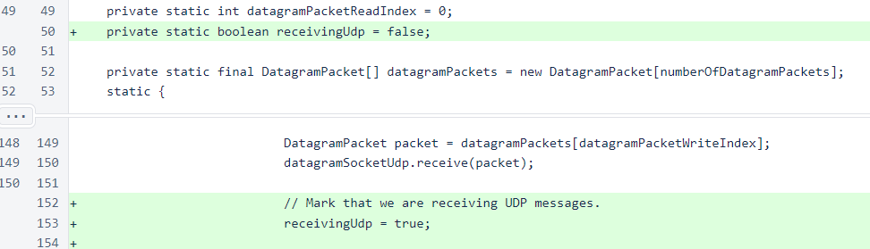
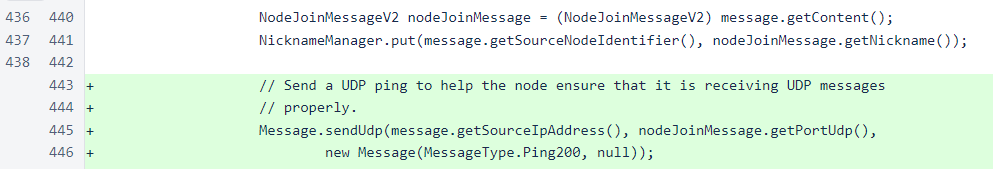
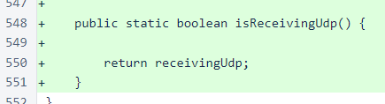
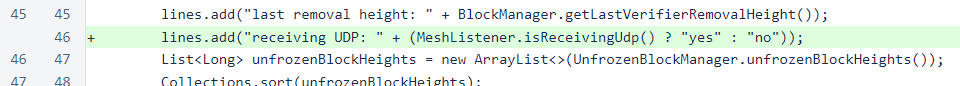

Nyzo version 520 (commit on GitHub) adds a field to the status to assist in determining whether UDP receipt is working properly.
This version only affects the verifier. The sentinel does not accept incoming messages, and it only sends TCP messages.
When UDP functionality was activated in version 511, some fields were added to the private version of the status response to ensure that UDP receipt and buffering were working properly. However, these fields were designed for manual testing, and they were not explained or exposed in the public response.
In this version, a field has been added to the public status response to indicate whether any UDP messages have been received. To limit the usefulness this field might have to an attacker, it is a simple yes/no value, and it does not expose any information about UDP performance of a verifier.
To ensure that UDP receipt issues are spotted quickly, even for out-of-cycle verifiers, all verifiers now send UDP pings to other nodes whenever a version-2 node-join message is received. This will allow out-of-cycle nodes to ensure that they are properly receiving UDP messages before they start receiving block votes.
In MeshListener, a field has been added to track whether any UDP messages have been received. This is a simple boolean field, and it is set to true whenever a UDP message is received.
When a version-2 node-join message is received, a UDP ping is sent back to the node. This ensures that out-of-cycle verifiers are receiving a steady stream of UDP messages from other verifiers, which will aid in debugging UDP problems.
An accessor was added to allow the StatusResponse class to access the receivingUdp value.
In the public section of the status response, a line has been added to display the new UDP status.
